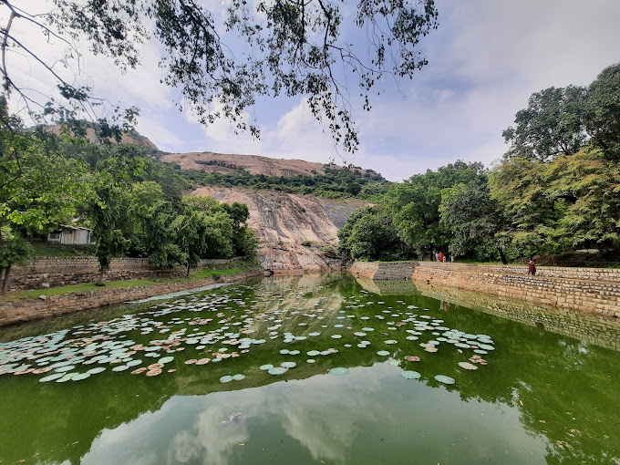
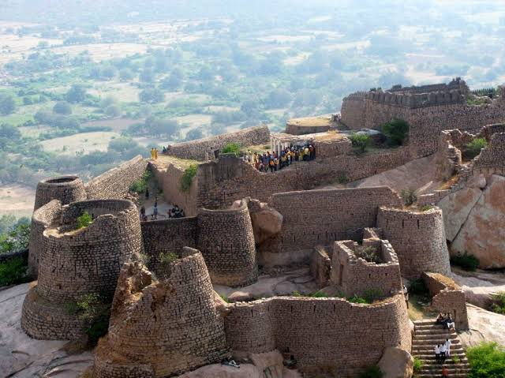

Visakha Museum
Add ticket
Visakha Museum (Full name: Visakhapatnam Municipal Corporation Museum)
is a museum located in the port city of Visakhapatnam
in Andhra Pradesh,India,
which houses the historical treasures and artifacts of the Kalingandhra region.
Chandragiri Fort
Add ticket
Chandragiri Fort is an historical fort, built in the 11th century located at
Chandragiri suburb in Tirupati.
Although mostly associated with the Vijayanagara
Emperors, it was built much earlier in 11th century by the Yadava rulers.
Gooty Fort
Add ticket
The Gooty Fort, also known as Ravadurg, is a ruined fort located on a hill in the Gooty town
of Andhra Pradesh, India.
The word Gooty is derived from the town's original name, Gowthampuri.